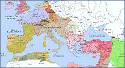

Le Journal perpendiculaire,
plein de petits articles sur l'Histoire (sens large).
Des sites généalogiques sur les familles royales
depuis Clovis :
- l'arbre généralogique
des
capétiens
Une page sur un livre sur Richard
Coeur de Lion (allemand/anglais).
Histoire de région : Histoire du Quercy
Assez pointu : Universitas (avec notamment un article sur le début des universités, la Paix de Dieu au Moyen-Age, et une initiation à la paléographie).